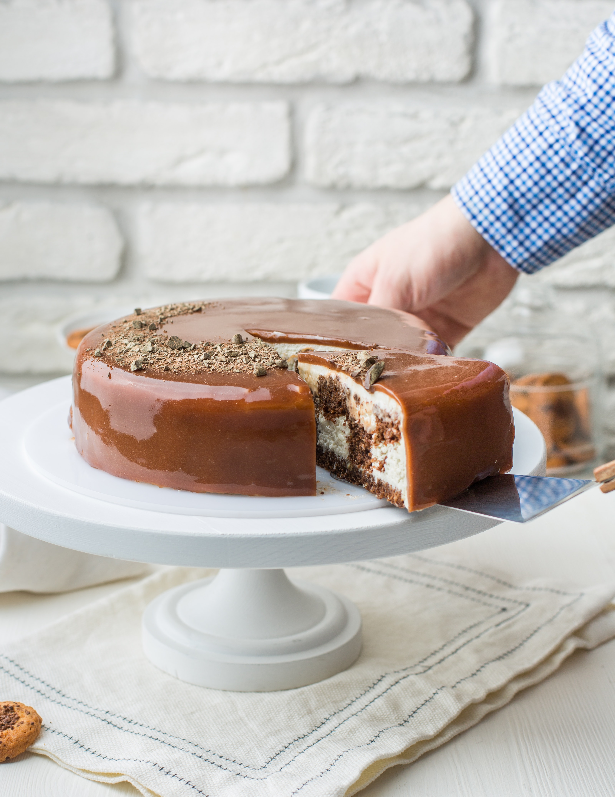

Cannoli Cheesecake Recipe

Ingredients
- Cooking spray
- 2 cups of graham cracker crumbs
- half cup salted butter, melted
- 3 tablespoons of sugar
- 1 and half teaspoons of ground cinnamon, divided
- 2 cups whole-milk ricotta cheese
- 1 and half cups mascarpone cheese
- 1 cup white sugar
- 1 cup white sugar
- 3 tablespoons all-purpose flour
- 1 tablespoon vanilla extract
- half teaspoon lemon zest
- 4 large eggs, at room temperature
- half cup cold heavy whipping cream
- quarter cup powdered sugar
- half teaspoon vanilla extract
- quarter cup miniature chocolate chips
Directions
- Preheat the oven to 325 degrees F (165 degrees C). Line a 9-inch springform pan with parchment paper and lightly grease paper and sides of the pan with cooking spray.
- Stir graham cracker crumbs, melted butter, 3 tablespoons sugar, and half teaspoon cinnamon together in a medium bowl until well combined. Pour graham cracker crumb mixture into the prepared pan and press firmly into the bottom and sides to create a crust.
- Bake in the preheated oven until lightly toasted and firm, about 10 minutes. Remove pan from the oven and set aside to cool completely at room temperature, about 30 minutes. Wrap the outsides of the pan tightly with aluminum foil; set aside.
- Reduce oven temperature to 300 degrees F (150 degrees C).
- Beat ricotta, mascarpone, 1 cup sugar, and flour together in a stand mixer fitted with a paddle attachment on low speed until smooth, scraping down the sides with a spatula as needed. Add 1 tablespoon vanilla extract, lemon zest, and remaining 1 teaspoon cinnamon and continue beating on low speed until combined, about 30 seconds. Add eggs, one at a time, beating on low speed until well combined.
- Pour batter into the prepared crust. Place the springform pan in a large baking dish and carefully fill baking dish halfway with water.
- Bake in the preheated oven until edges are set and center jiggles slightly, 1 hour 45 minutes to 2 hours. Turn the oven off and crack the oven door open slightly to allow cheesecake to cool slowly, about 1 hour. Remove the baking pan from the oven and remove the springform pan from the baking pan; remove aluminum foil.
- Transfer cheesecake to a refrigerator and chill, uncovered, until completely firm, at least 4 hours, or up to 8 hours. When cheesecake is completely chilled, remove from the refrigerator and carefully remove springform pan.
- Beat cream, powdered sugar, and half teaspoon vanilla extract together in a stand mixer fitted with a whisk attachment on medium-low speed until well combined, about 1 minute. Increase speed to high and continue beating until stiff peaks develop, about 1 minute.
- Spread whipped cream mixture on top of cheesecake using a spatula; sprinkle chocolate chips evenly on top of whipped cream. Slice cheesecake into 12 slices; serve immediately.